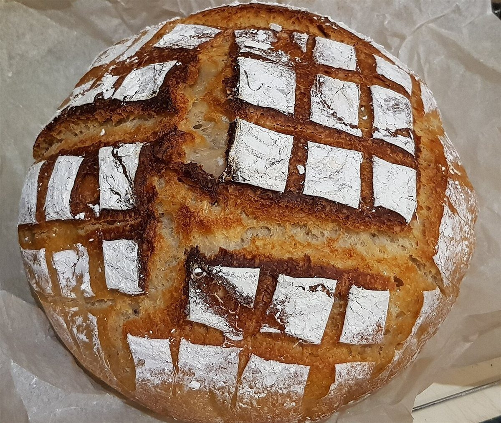
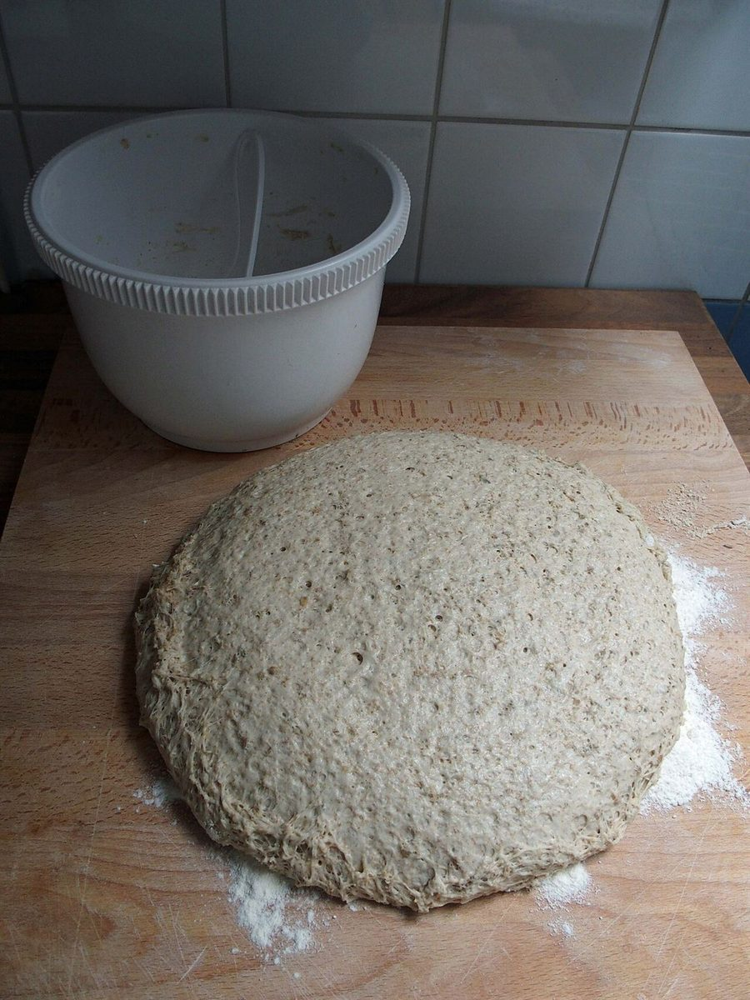
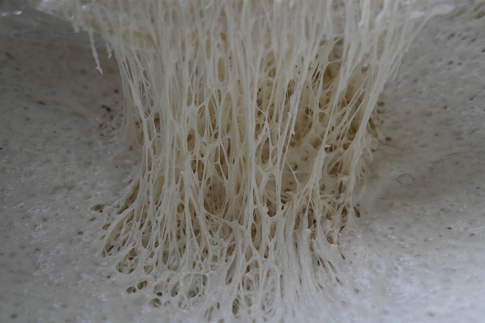
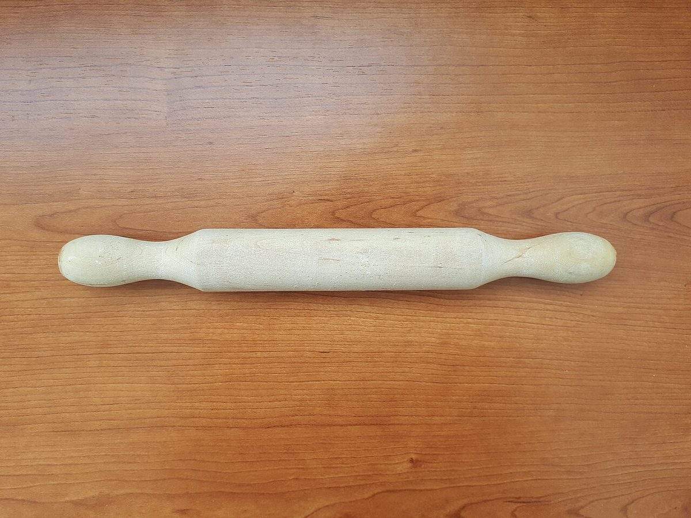

ベーカリー / 広島県東広島市西条本町
Nordic 4 Bageri
広島県東広島市西条本町にあるベーカリー「Nordic 4 Bageri」のご案内ページです。営業時間やメニューなど、詳しいことは準備中。まずはInstagramをのぞいてみてください。

制作側の連想
「Nordic」と「4」から、編み図を思い浮かべました
店名の由来は分かりません。制作側は「Nordic」の文字から北欧のニット模様を、「4」の数字から4目ひと模様の編み図を連想しました。そこでこのサイトは、方眼に記号を置いていく編み図の作りにしています。お店の理念や由来とは無関係の、制作側の連想です。
写真は4段(イメージ)
粉から焼き色まで、2段を編む
写真は国外・撮影地不明のフリー素材です。お店で扱うものを示すものではありません。残りの2段は「店のこと」「メニュー」ページにあります。
1段め
粉と生地




2段め
焼き色


ご案内
お店のこと(確認できたものだけ)
| 所在地 | 〒739-0011 広島県東広島市西条本町１１−９ |
|---|---|
| 営業時間 | 準備中 |
| 定休日 | 準備中 |
| メニュー・価格 | 準備中 |
| ご予約 | 準備中 |
| 駐車場 | 準備中 |
| SNS | Instagram @nordic_4_bageri |